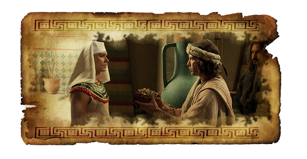

José do Egito
José (em hebraico יוֹסֵף, significando "[ Yahweh ] acrescentará .
Filho preferido de Jacó, apesar de não ser o seu primogênito (mas o primeiro filho de Jacó com Raquel, a mulher
que mais amou), José nunca escondeu a sua liderança.
O favoritismo, de que era alvo por parte do pai, valeu-lhe malquerença dos irmãos. Estes, quando José contava 17 para 18 anos,
venderam-no como escravo, por 20 sheqels de prata, a mercadores ismaelitas, que o levaram ao Egito, no período da XVII dinastia.

No Egito, José foi comprado por Potifar, oficial e capitão da guarda do rei do Egito, de quem conquistou a confiança
e tornou-se dirigente dos criados e administrador da casa. Na casa de Potifar, estudou com um escriba e aprendeu
a língua egípcia. Foi preso após acusação injusta de tentativa de abuso da mulher do seu amo, depois de uma tentativa
frustrada de sedução por parte desta.
Na prisão, tornou-se conhecido como intérprete dos sonhos. Lá, ele decifrou o sonho do copeiro-chefe e padeiro-chefe
do palácio do Faraó, que foram presos acusados de conspiração. Segundo a interpretação de José, o sonho do
padeiro-chefe indicava que este seria enforcado, mas o do copeiro-chefe indicava que este seria salvo, o que de fato
aconteceu.